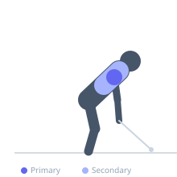
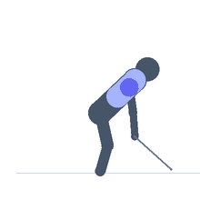

Exercise guide / Single-Arm Cable Face Pull
Single-Arm Cable Face Pull
The single-arm cable face pull uses one hand on the rope or handle to perform the face pull movement unilaterally. The single-arm version allows independent training of each rear delt and external rotator, is more effective at correcting left-right imbalances than bilateral face pulls, and allows slightly greater range of motion as the torso can rotate slightly without losing the training stimulus.
Primary muscles
deltoid posterior
Secondary muscles
trapezius middle
rhomboid major
Equipment
Cable Machine (High Pulley)


Starting position
- Set a cable pulley to upper face level. Attach a single handle. Grasp with one hand, arm extended toward the pulley. Stand facing the cable.
Setup
- Set the pulley at approximately eye level. Light load only — rear delts and external rotators are small muscles.
Steps
- Step 1: Begin with arm extended toward the cable.
- Step 2: Pull the handle toward the same-side ear/face, driving the elbow wide.
- Step 3: At peak, externally rotate the shoulder — thumb points behind and down.
- Step 4: Hold 1 second.
- Step 5: Return under control. Complete all reps on one side before switching.
Coaching cues
- Pull to the ear, not the chin
- Thumb points behind you at the top
- Elbow goes wide and high
Breathing
- Exhale on the pull. Inhale returning.
Range of motion
- Full arm extension to hand at face level with full external rotation.
Tempo
- 2-1-2-0
Common mistakes
- Pulling to the chest instead of the face — keep the hand at face level
- Omitting external rotation — the ER at peak is essential for shoulder health benefit
Safety
- Light loads only — high reps with light weight are more appropriate than heavy low reps
- Suitable as a warm-up or shoulder health accessory
Training
- hypertrophy: 15–25 reps
- hypertrophy: 3–4 sets
- Rest: {'hypertrophy': 60}